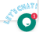

Overview¶
Zeeve is a Blockchain as a Service (BaaS) offering that allows customers to leverage cloud-based solutions to build, host and use their own Blockchain apps, Smart Contracts and functions on the blockchain while the cloud-based service provider manages all the necessary tasks and activities to keep the infrastructure agile and operational. It is an interesting development in the blockchain ecosystem that is indirectly aiding the blockchain adoption across businesses. It is based on, and works similar to, the concept of Software As A Service (SaaS) model.
 Dashboard¶
Dashboard¶
This is the dashboard page of Zeeve where you can see your Networks, Nodes, deployed product details, Node Disk Usage, Node Statistics, and all activity logs.
 Networks¶
Networks¶
Networks page basically give the details of Network Name, Number of active nodes, Number of inactive nodes, Selected Blockchain Network, Running Products Name, Network Created Date, Health of Network, Action(Statistics, Restart, Stop and Delete) .
 Nodes¶
Nodes¶
Nodes Page contains the information like Node ID, Network Name, Health, Network’s Region, Network Created Date, Online(Green colour for online and Red colour for Offline) and Action(Statistics, Restart, Stop and Delete).
 Stats(Statistics)¶
Stats(Statistics)¶
This action page contains information of Node Performance Details like Network, Region, Created Date, Node ID, IP Address, Node Status, CPU Usage, RAM Usage, Storage, Recent RAM Usage, Disk Usage, Inodes, Network Usage and Load. Basically we can monitor our network in this action.
 Restart¶
Restart¶
By using this action we can re-start the Node.
 Stop¶
Stop¶
By using this action we can stop the Node.
 Delete¶
Delete¶
By using this action we can delete the Node.
 Products¶
Products¶
The products page contains the information about selected blockchain’s product. These products are fully based on Blockchain. There are two types of products we can see here one is free product and another one is paid product.
Free Products¶
Free product is nothing but it’s open source project i.e. is supported by blockchain network e.g. Sawtooth Supply Chain, Sawtooth Tuna Fish. We have no need to pay for it.
Paid Producs¶
There are various paid products offering by blockchain network based on our choice we can choose it and add to our network. Sawtooth offering paid produts like MBC (Menu Based Choice) Conjoint, Lighthouse Studio etc.
 API Services¶
API Services¶
 Device Data¶
Device Data¶
 Tasks(Activity Log)¶
Tasks(Activity Log)¶
We can see all activity logs and related information of tasks here like network creation, product addition, node addition, etc.
 Notification¶
Notification¶
In this section we can see all notifications and invitations(refer to or receive from other people to add network).
Night Mode¶
We can change page orientation by using this theme we can select night mode or day light mode, working as vice-versa.
Night Mode¶

Day Light Mode¶

 Zeeve Assistant¶
For more information you can communicate with our Zeeve Assistant.